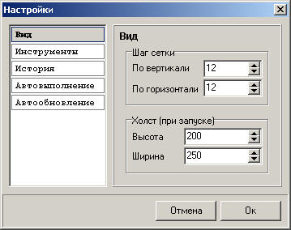

Содержание
I. О программе
GraphMaker - программа для расчета сетевых графов. Распространяется бесплатно.
Автор программы: Сидорович Владимир Владимирович
Контактная информация:
- E-mail: vvsidorovich.biz@gmail.com
- icq: 485792
Я надеюсь что программа Вам помогла добиться успехов в учебе и работе. Вы можете внести благотворительный взнос с целью развития этого программного продукта
W304211063166
E520225567041
Z357098215145
R107090476866
II. Что нового в версии 1.1?
Основное отличие программы GraphMaker версии 1.1 от версии 1.0 - это наличие системы проверки обновлений. Система проверки обновлений позволяет определить вышла ли новая версия программы, а также узнать о последних новостях связанных с програмным обеспечением GraphMaker. (см рис. 1)
рис. 1 "Система проверки обновлений"
Другое отличие, это полностью измененное окно настроек программы, которое стало интуитивно понятнее и в которое добавлена новая опция "Автообновление" функциональность которой описанна ниже.
II. Функциональные возможности
Для вызова окна настроек нужно: выбрать пункт горизонтального меню "Настройка" или нажать на кнопку в пиктографическом меню.
- Вкладка "Вид" позволяет установить значения для параметров: "Шаг сетки" (см раздел Холст) и "Холст (при запуске)". Установка значений параметра "Холст (при запуске)", позволяет задать размеры (в пикселях) холста при запуске программы или нового документа. (см рис. 2)

рис. 2 "Вкладка "Вид"
- Вкладка "Инструменты" позволяет указать после использования какого инструмента, произойдет автоматический переход к инструменту "Редактирование". (см рис. 3)
рис. 3 "Вкладка "Инструменты"
- Вкладка "История" позволяет установить параметр "Количество хранимых действий" в истории (минимальное значение 10, максимальное значение 9999). (см рис. 4)
рис. 4 "Вкладка "История"
- Вкладка "Автовыполнение" позволяет установить действия по завершению экспорта и поведению окна проверки при отсутствии ошибок. (см рис. 5)
рис. 5 "Вкладка "Автовыполнение"
- Вкладка "Автообновление" позволяет включить проверку новых версий программы и новостей сайта www.graphmaker.ru. (см рис. 6)
рис. 6 "Вкладка "Автообновление"
2. Инструменты для "рисования" сетевого графа
Программа GraphMaker, в отличие от её аналогов, позволяет не вручную вводить значения в таблицу, а непосредственно "рисовать" сетевой граф. Это экономит время и нервы, к тому же это очень наглядно и легко. Для "рисования" сетевого графа используются следующие элементы:
Инструмент "Редактирование" необходим для изменения свойств событий и работ, после того как те были размещены на холсте. Инструмент "Перемещение" позволяет перемещать события. При перемещении событий все работы. связанные с ним так же перемещаются в нужном направлении. Инструмент "Добавление события" добавляет на холст новое событие в указанном месте. При добавлении нового события ему автоматически присваивается номер, еще не имеющийся на этом листе. Инструмент "Добавление работы" позволяет соединить между собой события, что в результате создает работу. Для добавления работы на листе должно быть не менее двух событий. Чтобы добавить событие необходимо нажать левой кнопкой мыши на событие, с которого должна начинаться эта работа, и, не отпуская кнопку, "протянуть" линию до того события, на котором должна закончиться эта работа. Инструмент "Удаление" удаляет события и работы с холста. При удалении события, все связанные с ним работы, удаляются автоматически.
Программа GraphMaker при построении сетевого графа, а также при выводе его расчетов, позволяет задать стиль, с помощью которого можно определить цвета событий, работ и холста, всего лишь выбором стиля из списка, без изменения самого графа. (см. рис 7).
рис. 7 "Выбор стиля оформления графа"
В качестве примера программа содержит два стиля, но вы можете сами дополнить этот список. Ниже описан принцип добавления стиля:
- Открыть файл "styles\styles.ini".
- Добавить новый стиль, записав для этого его имя в квадратных скобках: например [New]. Наш новый стиль будет иметь название New.
- Записать параметры этого стиля
Имя параметраОписаниеsplash Иконка стиля (отображается в списке) формата *.bmp размером 14x14 icons Изображения четырех событий в различном состоянии формата *.bmp. Каждое событие имеет размер 40x40.
Изображения должны следовать в следующем порядке:- Невыделенное событие или событие не находится на критическом пути;
- Выделенное событие или событие находится на критическом пути;
- Событие можно добавить;
- Событие нельзя добавить.
mask Изображение маски формата *.bmp для параметра icons. Этот параметр является необязательным. Если параметр не указан, то прозрачным является белый цвет, иначе прозрачной частью изображения событий, является белый цвет в изображении маски. clr_sel Цвет выделенной линии clr_notsel Цвет невыделенной линии или линии, не находящейся на критическом пути clr_text Цвет текста clr_bg Цвет фона clr_cells Цвет сетки clr_path Цвет критического пути
Примечание: цвета задаются в шестнадцатеричном эквиваленте с префиксом $, общей длиной 4 байта (8 символов от 0 до F), т. е. $00FFFFFF. - Создать каталог с именем стиля, например "new", в каталоге "styles".
- Разместить в каталоге все файлы формата *.bmp
Холст программы GraphMaker аналогичен холсту графических редакторов. Имеет следующие настройки:
- Ширина и высота холста. Установка производится как при помощи мыши, так и с помощью ввода значения (значение измеряется в пикселях) с клавиатуры в поля высота и ширина. (см рис. 8)
рис. 8 "Установка ширины и высоты холста с клавиатуры"
- Режим "Показывать сетку". Режим отображения сетки удобен при построении графа. Режим устанавливается в горизонтальном меню: "Вид / Показывать сетку". На рис. 9 приведен вид холста с включенным режимом отображения сетки.
рис. 9 "Вид холста с включенным режимом отображения сетки"
- Режим "Привязка к сетке". Данный режим позволяет выравнивать, строящиеся элементы относительно линий сетки, с шагом указанных в настройках программы. Режим устанавливается в горизонтальном меню: "Вид / Привязка к сетке". Для установки шага сетки следует вызвать окно настроек программы (см пункт "Окно настроек программы").
Каждое событие обладает следующим рядом свойств:
- Позиция по оси X;
- Позиция по оси Y;
- Номер события (данное свойство должно быть уникальным);
- Название события.
Свойства событий задаются на панели "Редактирование". (см рис. 10). После внесения изменений следует нажать клавишу "Enter", в противном случае свойства вернутся в исходное состояние.
рис. 10 "Панель "Редактирование" - изменение свойств событий"
Каждая работа обладает следующим рядом свойств:
- Начало;
- Конец;
- Продолжительность;
- Название работы.
Свойства событий задаются на панели "Редактирование". (см рис. 11). После внесения изменений следует нажать клавишу "Enter", в противном случае свойства вернутся в исходное состояние.
рис. 11 "Панель "Редактирование" - изменение свойств работ"
Примечание: работа, имеющая продолжительность равную 0, изображается пунктирной линией.
7. Проверка на ошибки и некорректность созданного сетевого графа
После того как вы рассчитали сетевой граф, может оказаться что подсчеты были не верны. Этап проверки на ошибки и предупреждения возникает после одного из действий: выбрать в горизонтальном меню "Результат / Показать расчеты", или нажать клавишу "F9", или нажать на кнопку в пиктографическом меню. Что бы этого избежать, программа GraphMaker имеет систему проверки на ошибки и некорректность "нарисованного" вами сетевого графа. Перед выводом расчета сетевой граф проходит 11-ти этапную проверку на ошибки и предупреждения, после чего, найденные им ошибки и предупреждения выводятся в диалоговое окно (см рис. 12).
рис. 12 "Диалоговое окно систему проверки на ошибки и некорректность сетевого графа"
В случае обнаружения ошибок, вывод результата будет остановлен. При наличии предупреждений вывод результата возможен, но он может быть некорректным. Имея такую информация об ошибках и предупреждениях, их можно с легкостью устранить. Ниже приведена таблица ошибок и предупреждений.
Ошибка Работы отсутствуют На холсте должна находиться минимум одна работа. Необходимо добавить работы в сетевой граф Ошибка Имеются события с одинаковыми номерами Каждое событие должно иметь уникальный номер. Необходимо изменить номера повторяющихся событий Ошибка Не соблюдается порядок следования работ Каждая работа должна начинаться с события, номер которого меньше номера которым заканчивается это событие. Необходимо изменить направление работ или изменить номера событий Предупреждение Имеются пустые события Имеются события, которые не являются не началом не концом ни одной работы. Такие события желательно удалить Предупреждение Имеется несколько начальных событий Сетевой граф должен содержать только одно начальное событие (событие которое не является концом, какой либо работы). Необходимо удалить лишние начальные события Предупреждение Не возможно определить начальное событие Сетевой граф должен содержать одно начальное событие (событие которое не является концом, какой либо работы). Необходимо создать начальное событие Предупреждение Имеется несколько конечных событий Сетевой граф должен содержать только одно конечное событие (событие которое не является началом, какой либо работы). Необходимо удалить лишние конечные события Предупреждение Не возможно определить конечное событие Сетевой граф должен содержать одно конечное событие (событие которое не является началом, какой либо работы). Необходимо создать конечное событие Предупреждение Начальное событие не является первым в списке Таблица расчетов формируется согласно нумерации событий. В данном случае начальное событие может не находиться в первой строчке. Необходимо поменять номер начального события на номер первого в таблице Предупреждение Конечное событие не является последним в списке Таблица расчетов формируется согласно нумерации событий. В данном случае конечное событие может не находиться в последней строчке. Необходимо поменять номер конечного события на номер последнего в таблице Предупреждение Не соблюдается нумерация Таблица расчетов формируется согласно нумерации событий. В данном случае таблица не будет содержать пропущенных событий. На результат вычислений такая нумерация не влияет, но таблица результатов будет иметь худшее восприятие Предупреждение Имеются события с одинаковым именем В таблицу событий записывается нумерация события и его имени. Возникновение этой ошибки не повлияет на результат, но таблица событий будет иметь одинаковые имена событий, что может привести к путанице. Предупреждение Имеются работы с одинаковым именем В таблицу работ записывается нумерация работы и его имени. Возникновение этой ошибки не повлияет на результат, но таблица работ будет иметь одинаковые имена работ, что может привести к путанице.
8. Просмотр и экспорт результата
После того как граф был построен и откорректирован в случае ошибок, выводится окно результатов имеющие три вкладки: